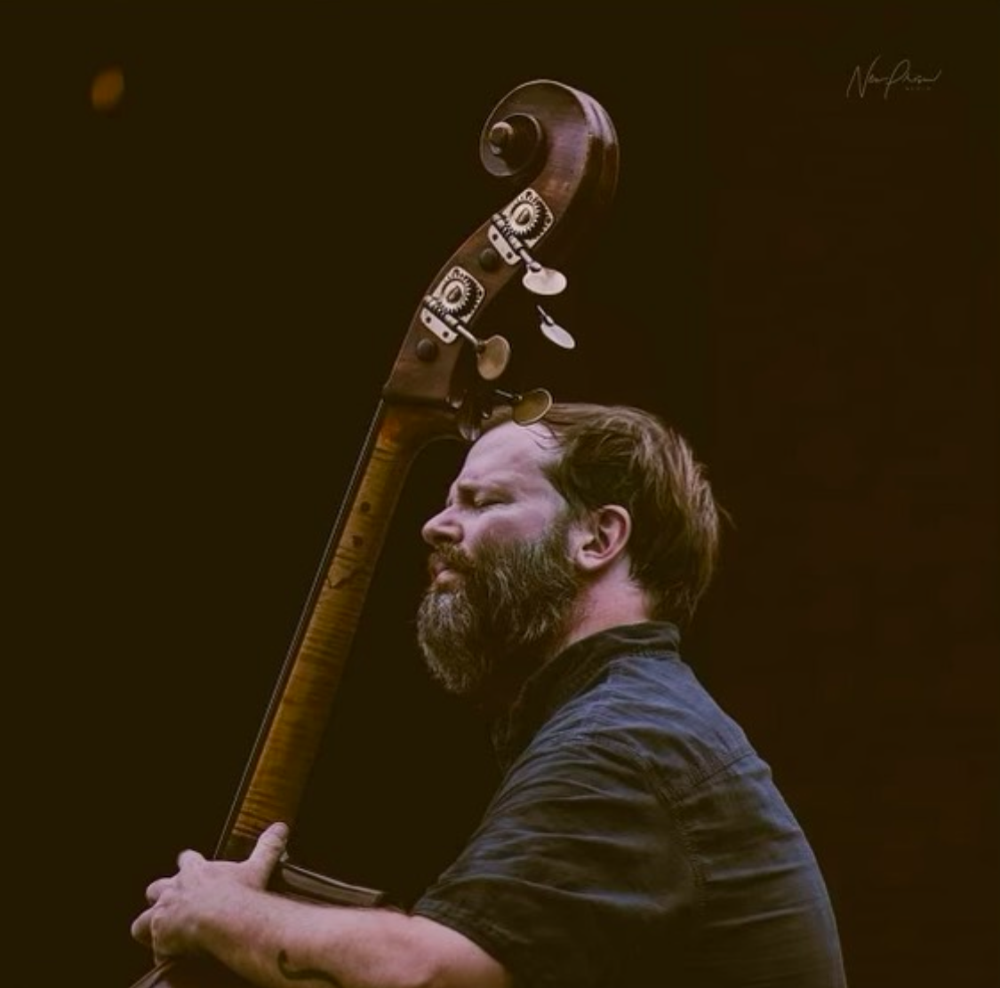
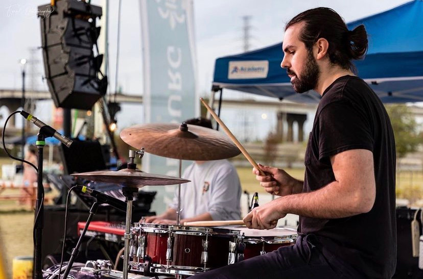

About Us

Rahib Amin
Born in Saudi Arabia and shaped by a rich tapestry of musical traditions, Rahib is a dynamic jazz guitarist with over two decades of experience. In his early teens, he moved to the United States, where he immersed himself in the vibrant jazz communities of cities and towns along the East Coast. His early influences stem from the Hindustani music his father performed and the Arabic melodies that surrounded him. Over time, his musical palette expanded, drawing inspiration from avant-garde jazz, free improvisation, and the deep roots of early American music—including rock, soul, and R&B. The expressive and experimental sounds of ‘90s American artists such as Radiohead and Béla Bartók, along with the boundary-pushing spirit of bebop pioneers, continue to shape his approach to the guitar. A true improviser and global music enthusiast, Rahib blends diverse sounds and traditions, creating a style that transcends genres. His playing reflects a deep appreciation for world music and artistic expression, making him a compelling voice in contemporary jazz.
The Band
Matt Hall
Matthew Hall, Double Bass, was born and raised in Virginia, USA. While in grade school, he began playing the saxophone, placing first in regional competitions. He later enrolled at Virginia Commonwealth University, where he studied Jazz and Classical music. Since graduating Magna Cum Laude from VCU with a Bachelor's Degree in Music Performance, he has worked professionally as a musician. He has toured and/or shared the stage with many great musicians such as The Tommy Dorsey Orchestra, Jimmy Cobb, Rene Marie, Matt Wilson, John D'Earth, Howard Curtis, Dena Derose, Kevin Mahogany, Dave Allen, Imer Demirer, Erkan Ogur, Sarp Maden, Nedim Nalbantoglu, Sibel Kose, and many others. He is currently living in Istanbul.
Instagram Profile 